Solutions to Improve Food Security
What are some ways Food Security in Yemen can be improved?
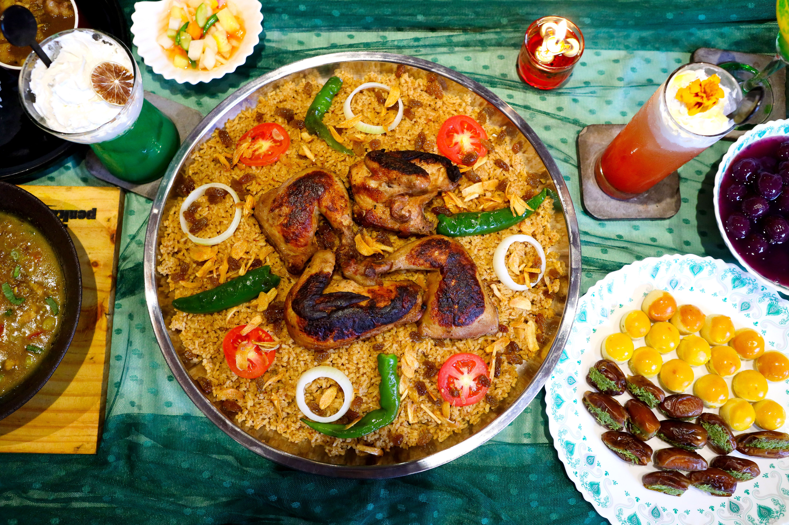
Solutions
What are the Solutions?
Water-Efficient Irrigation and Solar-Powered Pumps
What is the Solution?
A realistic solution for Yemen is to expand water-efficient irrigation systems, including drip irrigation, solar-powered pumps and improved water-management systems.
Drip irrigation delivers water directly to crops instead of flooding entire fields. Solar pumps can replace expensive fuel-powered pumps.
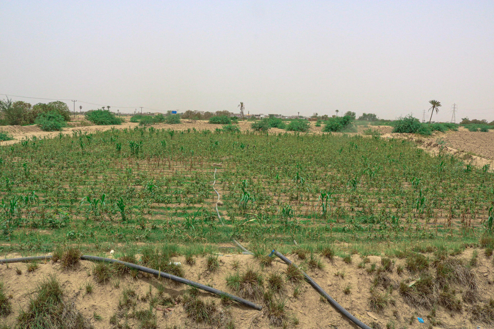
How does it work?
Solar panels provide electricity to pump water for irrigation. Drip irrigation then delivers controlled amounts of water directly to plant roots.
Water-user associations can also manage wells and irrigation systems so that groundwater is not overused.
This solution must be combined with groundwater monitoring and water regulations. Solar pumps can reduce fuel costs, but using them without controlling groundwater extraction could increase water depletion.
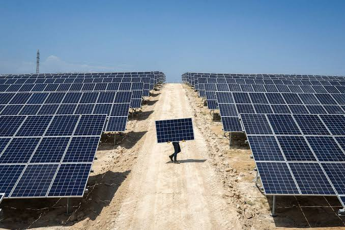
What challenge does it address?
This strategy mainly addresses:
- Water scarcity
- High farming costs
- Low agricultural production
- Dependence on fuel
- Climate variability
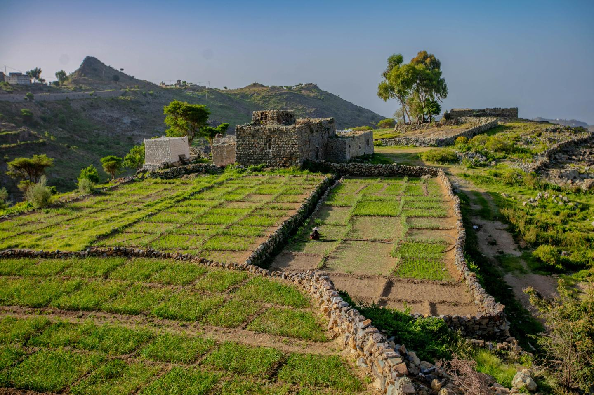
Where is it already being used?
FAO and the European Union have already used solar-powered irrigation systems in Yemen.
One FAO-EU project established 42 solar-powered water pumps in different districts. In one community in Ibb Governorate, a solar-powered well served around 400 people and supplied water to approximately 40 farms.
FAO also tested integrated water-management methods in the Sana’a Basin. Modern irrigation, piped systems, water harvesting and other measures reduced water use on irrigated land by 19%.
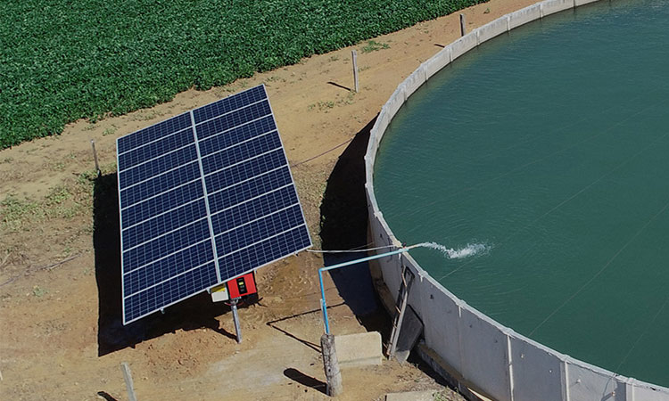
Why would it work in Yemen?
Solar energy is widely available in Yemen, while fuel for conventional pumps can be expensive and difficult to obtain.
Water-efficient irrigation would allow farmers to produce more food with less water. It could also reduce farming costs and help rural families maintain their livelihoods.
The strategy should be introduced alongside groundwater management so that increased access to solar pumping does not cause further groundwater depletion.
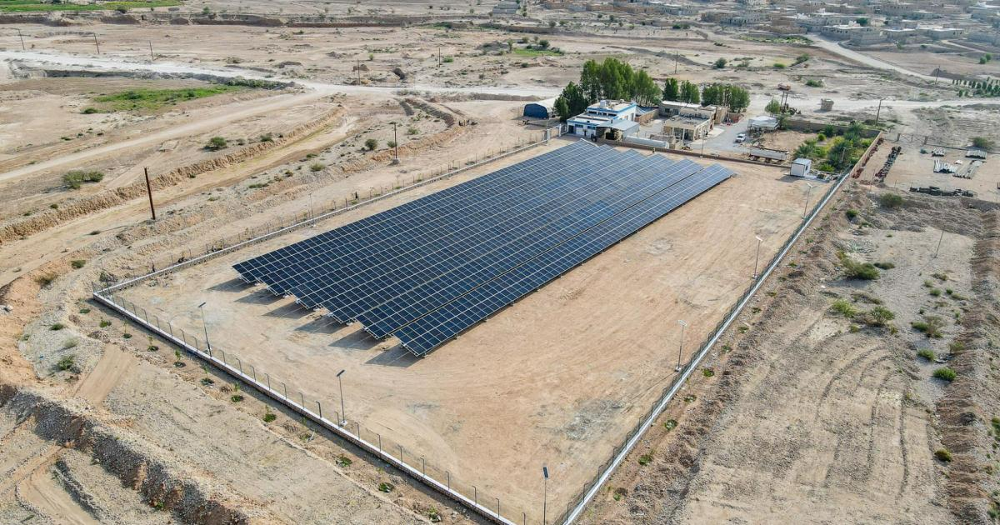
Restore Terraces, Water-Harvesting Systems and Irrigation Infrastructure
What is the Solution?
Yemen can improve food security by restoring traditional terraces, rainwater-harvesting systems, dams, canals and other irrigation infrastructure.
These systems capture rainfall and runoff and make it available for agriculture instead of allowing large amounts of water to run away during storms.
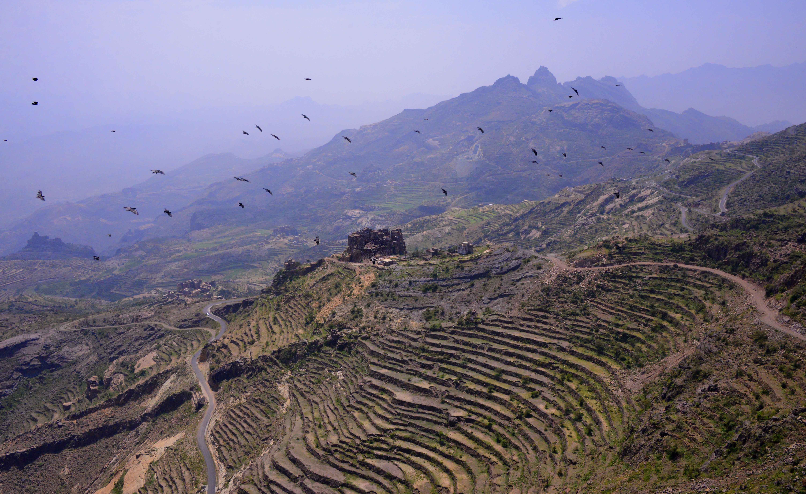
How does it work?
Terraces slow water flowing down mountain slopes. This reduces soil erosion and allows more water to soak into the ground.
Water-harvesting tanks and small dams can store rainfall for later use.
Rehabilitated canals can transport water to farms more efficiently.
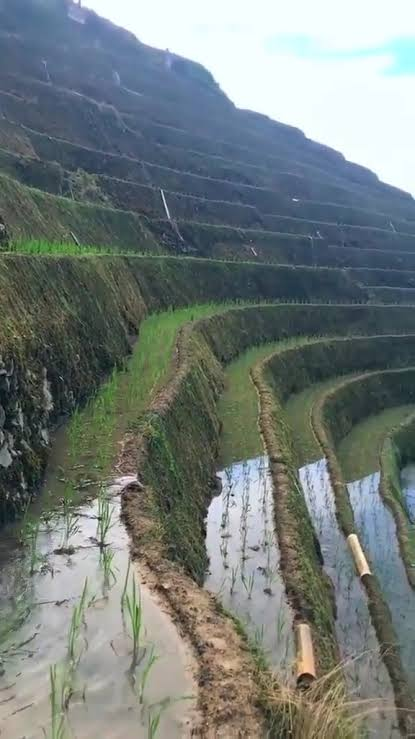
What challenge does it address?
This strategy addresses:
- Water scarcity
- Drought
- Land degradation
- Flood damage
- Low agricultural productivity
- Climate change
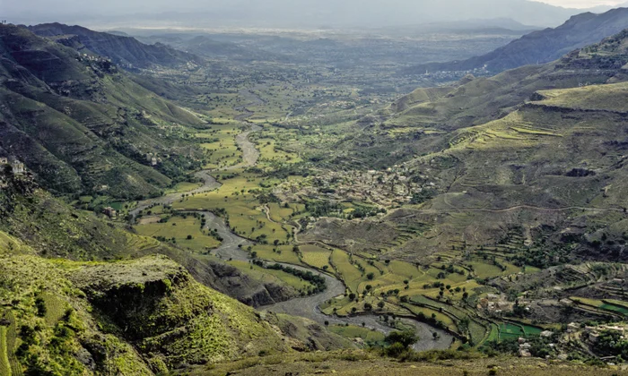
Where is it already being used?
FAO has already used this approach in Yemen.
In 2021, a FAO project rehabilitated 259 small and medium irrigation structures in Lahj and Ibb. The project included 98 water-harvesting tanks, 24 kilometres of terraces, 21 kilometres of canals, 5 kilometres of wadi-bank protection and nine shallow wells.
More recently, FAO has continued rehabilitating dams, canals and wells. In one 2025 project, a farmer reported being able to irrigate around 150 acres instead of 50 after water infrastructure was restored.
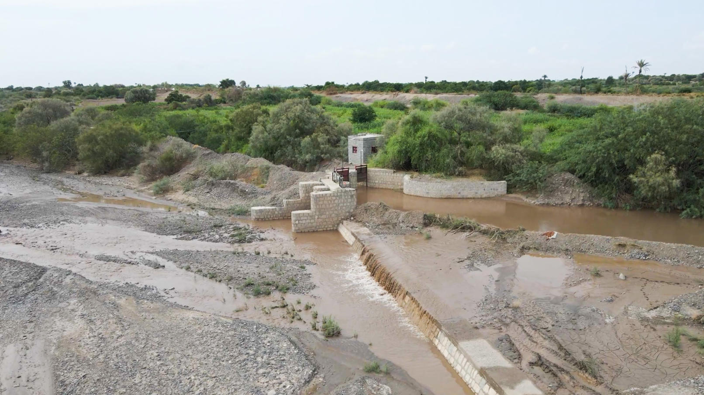
Why would it work in Yemen?
Terracing and water harvesting are already suited to Yemen’s mountainous terrain and have been used by Yemeni farmers for centuries.
Restoring these systems would combine traditional knowledge with modern engineering. It would help farmers capture more rainfall, reduce erosion and improve water availability without relying entirely on groundwater.
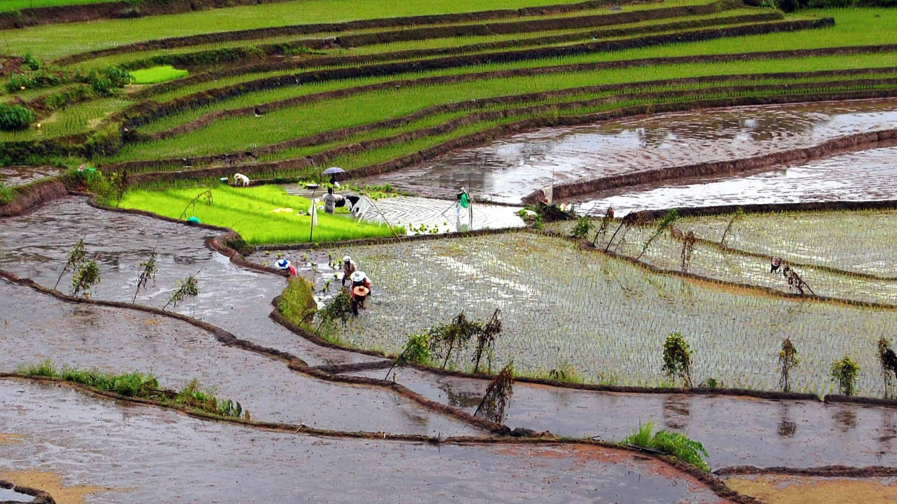
Our Recommendation
The best approach is not to rely on one solution.
Yemen needs both better water management and stronger agricultural infrastructure. Solar-powered drip irrigation can reduce water and fuel costs, while restored terraces, dams and water-harvesting systems can capture and store rainfall.
These strategies should also be combined with support for farmers, improved agricultural training, access to seeds and fertiliser, and continued humanitarian food assistance.
Improving food security in Yemen will require long-term investment as well as immediate humanitarian support.
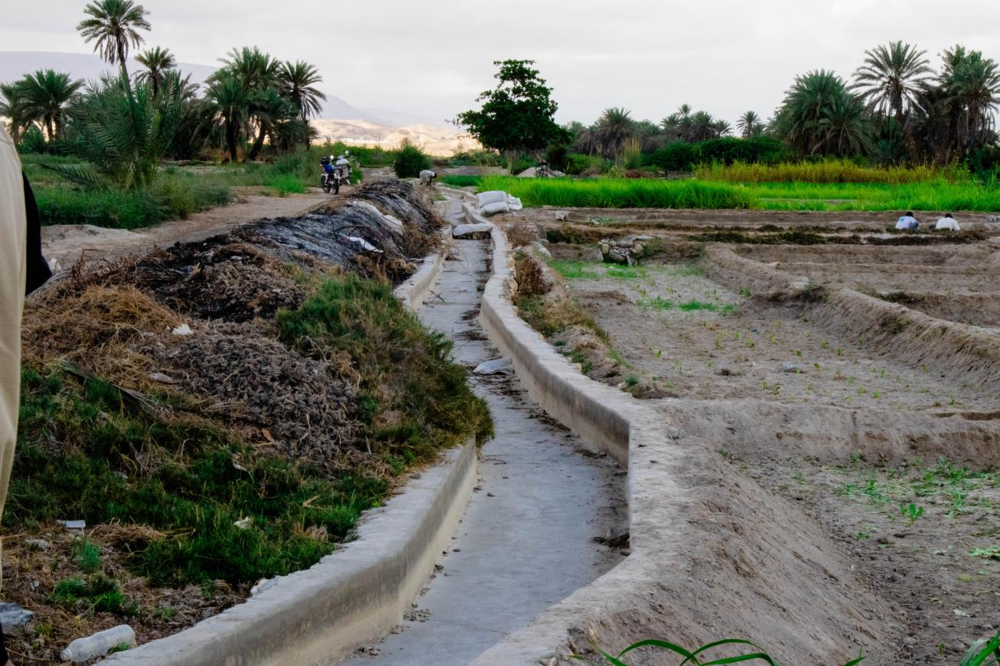
Facts
Key Facts About Yemen
Yemen at a Glance
Population: approximately 41.8 million people in 2025
⇓
People requiring humanitarian assistance in 2026: more than 22 million
⇓
People acutely food insecure in 2026: approximately 18.3 million
⇓
People in government-controlled areas experiencing Crisis or worse food insecurity in March-May 2026: approximately 5 million
⇓
Projected people in government-controlled areas experiencing Crisis or worse during June-September 2026: approximately 5.4 million
⇓
Renewable water resources: approximately 2.5 billion m³ per year
⇓
Estimated water consumption: approximately 3.5 billion m³ per year
⇓
Main environmental challenge: water scarcity
⇓
Major economic challenge: poverty, inflation and high food prices
⇓
Major political challenge: conflict and instability